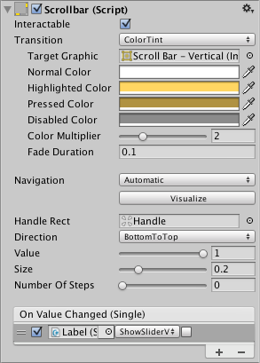

Scrollbar
The Scrollbar control allows the user to scroll an image or other view that is too large to see completely. Note that the similar Slider control is used for selecting numeric values rather than scrolling. Familiar examples include the vertical Scrollbar at the side of a text editor and the vertical and horizontal pair of bars for viewing a section of a large image or map.


Properties
| Property: | Function: |
|---|---|
| Interactable | Will this component accept input? See Interactable. |
| Transition | Properties that determine the way the control responds visually to user actions. See Transition Options. |
| Navigation | Properties that determine the sequence of controls. See Navigation Options. |
| Fill Rect | The graphic used for the background area of the control. |
| Handle Rect | The graphic used for the sliding "handle" part of the control |
| Direction | The direction in which the Scrollbar's value will increase when the handle is dragged. The options are Left To Right, Right To Left, Bottom To Top and Top To Bottom. |
| Value | Initial position value of the Scrollbar, in the range 0.0 to 1.0. |
| Size | Fractional size of the handle within the Scrollbar, in the range 0.0 to 1.0. |
| Number Of Steps | The number of distinct scroll positions allowed by the Scrollbar. |
Events
| Property: | Function: |
|---|---|
| On Value Changed | A UnityEvent that is invoked when the current value of the Scrollbar changes. The event can send the value as a float type dynamic argument. |
Details
The value of a Scrollbar is determined by the position of the handle along its length with the value being reported as a fraction between the extreme ends. For example, the default left-to-right bar has a value of 0.0 at the left end, 1.0 at the right end and 0.5 indicates the halfway point. A scrollbar can be oriented vertically by choosing Top To Bottom or Bottom To Top for the Direction property.
A significant difference between the Scrollbar and the similar Slider control is that the Scrollbar's handle can change in size to represent the distance of scrolling available; when the view can scroll only a short way, the handle will fill up most of the bar and only allow a slight shift either direction.
The Scrollbar has a single event called On Value Changed that responds as the user drags the handle. The current value is passed to the even function as a float parameter. Typical use cases for a scrollbar include:
- Scrolling a piece of text vertically.
- Scrolling a timeline horizontally.
- Used as a pair, scrolling a large image both horizontally and vertically to view a zoomed section. The size of the handle changes to indicate the degree of zooming and therefore the available distance for scrolling.